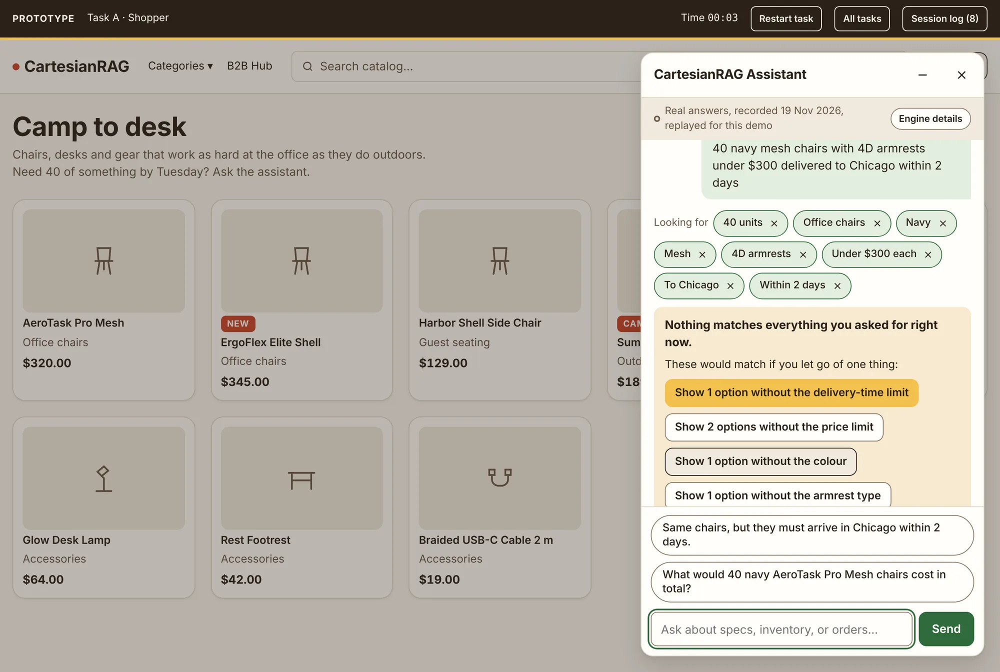
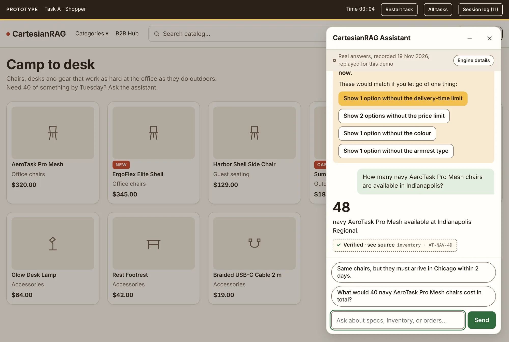
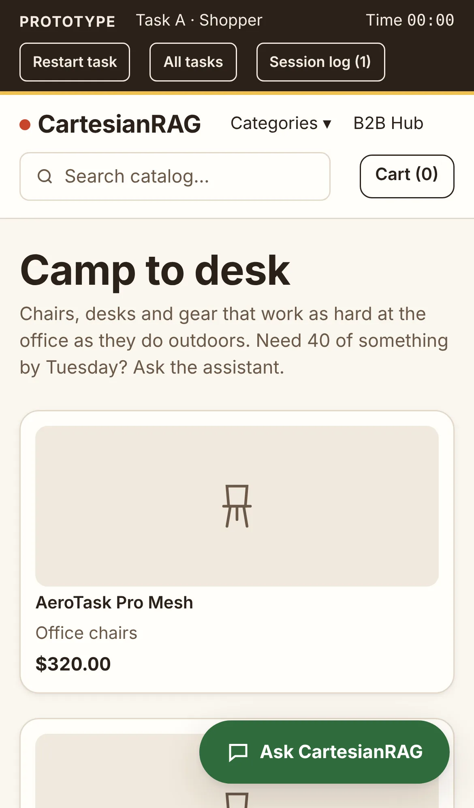
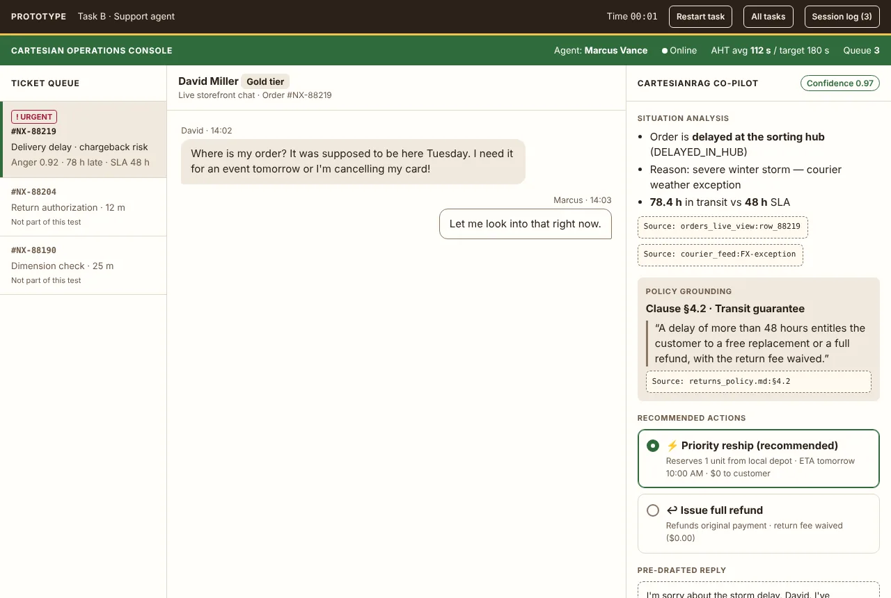

High‑Fidelity UI.
The same structure as the wireframes, now in colour and driven by real engine answers. Every screen here shows a ticket the engine actually produced.
Elena’s answer
Her requirements, visible and removable.

The engine assumed one warehouse, the stricter rule, so it says so and offers the change. Tapping × on any chip re‑runs the same requirements minus that one. No AI runs, so the answer arrives in milliseconds.
Ways out
Nothing matches is never a dead end.

Lookups
A number with its subject.

On a phone
The storefront, camp to desk.

The products are real rows from the engine’s store. The red “New” and “Camp‑to‑desk” tags are the only place the campfire accent appears.
Open the demo and ask the assistant for 40 navy mesh chairs.
The console
Marcus’s half, styled but not yet connected.
